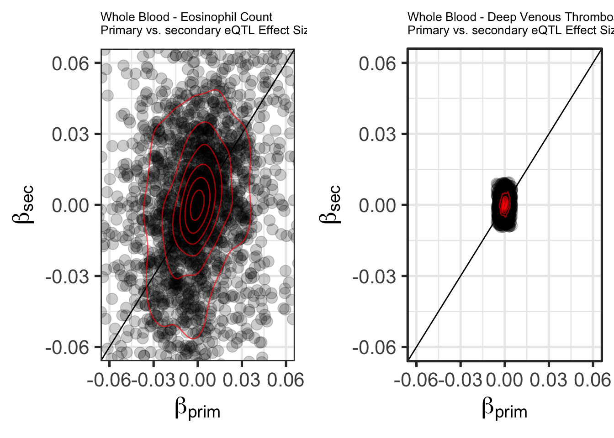
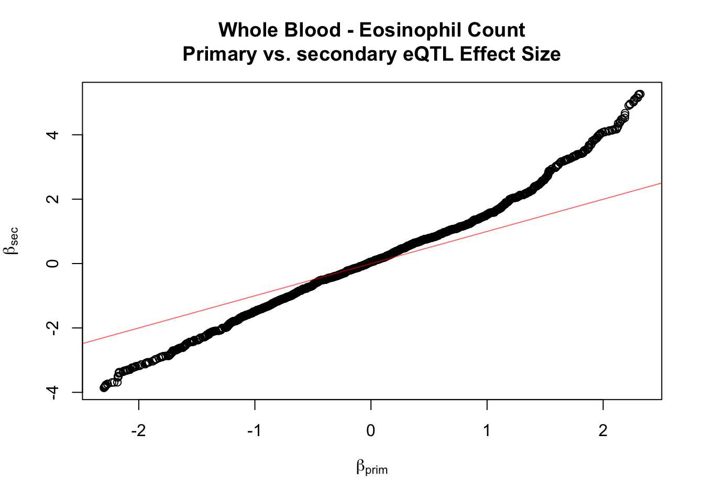

analysis
joshjiang
8/6/2019
Last updated: 2019-08-09
Checks: 6 1
Knit directory: beta_prim_vs_sec_analysis/
This reproducible R Markdown analysis was created with workflowr (version 1.4.0). The Checks tab describes the reproducibility checks that were applied when the results were created. The Past versions tab lists the development history.
Great! Since the R Markdown file has been committed to the Git repository, you know the exact version of the code that produced these results.
The global environment had objects present when the code in the R Markdown file was run. These objects can affect the analysis in your R Markdown file in unknown ways. For reproduciblity it’s best to always run the code in an empty environment. Use wflow_publish or wflow_build to ensure that the code is always run in an empty environment.
The following objects were defined in the global environment when these results were created:
| Name | Class | Size |
|---|---|---|
| data | environment | 56 bytes |
| env | environment | 56 bytes |
The command set.seed(20190806) was run prior to running the code in the R Markdown file. Setting a seed ensures that any results that rely on randomness, e.g. subsampling or permutations, are reproducible.
Great job! Recording the operating system, R version, and package versions is critical for reproducibility.
Nice! There were no cached chunks for this analysis, so you can be confident that you successfully produced the results during this run.
Great job! Using relative paths to the files within your workflowr project makes it easier to run your code on other machines.
Great! You are using Git for version control. Tracking code development and connecting the code version to the results is critical for reproducibility. The version displayed above was the version of the Git repository at the time these results were generated.
Note that you need to be careful to ensure that all relevant files for the analysis have been committed to Git prior to generating the results (you can use wflow_publish or wflow_git_commit). workflowr only checks the R Markdown file, but you know if there are other scripts or data files that it depends on. Below is the status of the Git repository when the results were generated:
Ignored files:
Ignored: .DS_Store
Ignored: .Rhistory
Ignored: .Rproj.user/
Note that any generated files, e.g. HTML, png, CSS, etc., are not included in this status report because it is ok for generated content to have uncommitted changes.
These are the previous versions of the R Markdown and HTML files. If you’ve configured a remote Git repository (see ?wflow_git_remote), click on the hyperlinks in the table below to view them.
| File | Version | Author | Date | Message |
|---|---|---|---|---|
| Rmd | fe91092 | zjiang2 | 2019-08-09 | changed plot ratios |
| html | 582edae | zjiang2 | 2019-08-08 | Build site. |
| Rmd | 936ef02 | zjiang2 | 2019-08-08 | add all qqplots |
| html | 4d52a44 | zjiang2 | 2019-08-08 | Build site. |
| Rmd | b0be262 | zjiang2 | 2019-08-08 | removed alpha from contour line |
| html | f7c3fd6 | zjiang2 | 2019-08-08 | Build site. |
| Rmd | aab4eaa | zjiang2 | 2019-08-08 | added every phenotype plot |
| html | 1110888 | zjiang2 | 2019-08-07 | Build site. |
| Rmd | 4d1f682 | zjiang2 | 2019-08-07 | patch |
| html | 4dcd3ff | zjiang2 | 2019-08-07 | Build site. |
| html | 7d2727e | zjiang2 | 2019-08-07 | Build site. |
| Rmd | c9f1dcc | zjiang2 | 2019-08-07 | changed qqplot |
| html | 02adba9 | zjiang2 | 2019-08-07 | Build site. |
| Rmd | 2ebde8a | zjiang2 | 2019-08-07 | changed qqplot |
| html | 196f25d | zjiang2 | 2019-08-06 | Build site. |
| Rmd | 7bd2afd | zjiang2 | 2019-08-06 | added qqplot, changed scatterplot |
| html | b97e932 | zjiang2 | 2019-08-06 | Build site. |
| Rmd | 1f88d2b | zjiang2 | 2019-08-06 | modified analysis |
| html | f837b2c | zjiang2 | 2019-08-06 | Build site. |
| html | 2e2c9ab | zjiang2 | 2019-08-06 | Build site. |
| Rmd | a877650 | zjiang2 | 2019-08-06 | markdown analysis |
Problem:
The beta prime vs secondary plots are not in the same scale.
e.g.
dapg_file_pattern <- "/Users/joshjiang/hakylab/gtex-gwas-analysis/data/dapg_selected_variants/expression/gwas_and_eqtl/DAPG_with_mashr__{tissue}.rds"
phenotype_lst <- readLines("/Users/joshjiang/hakylab/gtex-gwas-analysis/data/phenotype_list.txt")
metadata <- read_tsv("/Users/joshjiang/hakylab/gtex-gwas-analysis/data/gwas_metadata.txt") %>% rename(phenotype=Tag)
tissue <- "Whole_Blood"
phenotype <- "Astle_et_al_2016_Eosinophil_counts"
df <- readRDS(glue::glue(dapg_file_pattern))[[phenotype]]
short_phenotype <- as.character(metadata[metadata$phenotype==phenotype, "new_Phenotype"])
df_2_eqtl <- df %>%
group_by(tissue, phenotype, gene_id) %>%
filter(n() == 2) %>%
mutate(rank = order(order(abs(eqtl_effect_size), decreasing=TRUE))) %>%
mutate(rank = paste0("rank", rank)) %>%
mutate(beta_gene=gwas_effect_size/eqtl_effect_size) %>%
select(tissue, phenotype, gene_id, rank, beta_gene) %>%
spread(key=rank, value=beta_gene)
df_2_eqtl <- df_2_eqtl[df_2_eqtl$rank1 > quantile(df_2_eqtl$rank1, 0.05, na.rm = TRUE) & df_2_eqtl$rank1 < quantile(df_2_eqtl$rank1, 0.95, na.rm = TRUE),]
df_2_eqtl <- df_2_eqtl[df_2_eqtl$rank2 > quantile(df_2_eqtl$rank2, 0.05, na.rm = TRUE) & df_2_eqtl$rank2 < quantile(df_2_eqtl$rank2, 0.95, na.rm = TRUE),]
plot_title <- "{gsub(pattern='_', replacement=' ', x=tissue)} - {gsub(pattern='_', replacement=' ', x=short_phenotype)}\nPrimary vs. secondary eQTL" %>% glue::glue()
pp1 <- ggplot(df_2_eqtl, aes(rank1, rank2))
pp1 <- pp1 + geom_point(alpha=.2, size=4)
pp1 <- pp1 + theme_bw(base_size=20)
pp1 <- pp1 + geom_abline(slope=1,intercept=0)
pp1 <- pp1 + stat_density2d(color = alpha(colour="red",alpha=0.6), contour = TRUE)
pp1 <- pp1 + ggtitle(plot_title)
pp1 <- pp1 + xlab(expression(beta[prim])) + ylab(expression(beta[sec]))
pp1 <- pp1 + coord_cartesian(xlim=c(-0.06,0.06), ylim=c(-0.06,0.06))
phenotype <- "UKB_20002_1094_self_reported_deep_venous_thrombosis_dvt"
df <- readRDS(glue::glue(dapg_file_pattern))[[phenotype]]
short_phenotype <- as.character(metadata[metadata$phenotype==phenotype, "new_Phenotype"])
df_2_eqtl <- df %>%
group_by(tissue, phenotype, gene_id) %>%
filter(n() == 2) %>%
mutate(rank = order(order(abs(eqtl_effect_size), decreasing=TRUE))) %>%
mutate(rank = paste0("rank", rank)) %>%
mutate(beta_gene=gwas_effect_size/eqtl_effect_size) %>%
select(tissue, phenotype, gene_id, rank, beta_gene) %>%
spread(key=rank, value=beta_gene)
df_2_eqtl <- df_2_eqtl[df_2_eqtl$rank1 > quantile(df_2_eqtl$rank1, 0.05, na.rm = TRUE) & df_2_eqtl$rank1 < quantile(df_2_eqtl$rank1, 0.95, na.rm = TRUE),]
df_2_eqtl <- df_2_eqtl[df_2_eqtl$rank2 > quantile(df_2_eqtl$rank2, 0.05, na.rm = TRUE) & df_2_eqtl$rank2 < quantile(df_2_eqtl$rank2, 0.95, na.rm = TRUE),]
plot_title <- "{gsub(pattern='_', replacement=' ', x=tissue)} - {gsub(pattern='_', replacement=' ', x=short_phenotype)}\nPrimary vs. secondary eQTL" %>% glue::glue()
pp2 <- ggplot(df_2_eqtl, aes(rank1, rank2))
pp2 <- pp2 + geom_point(alpha=.2, size=4)
pp2 <- pp2 + theme_bw(base_size=20)
pp2 <- pp2 + geom_abline(slope=1,intercept=0)
pp2 <- pp2 + stat_density2d(color = alpha(colour="red",alpha=0.6), contour = TRUE)
pp2 <- pp2 + ggtitle(plot_title)
pp2 <- pp2 + xlab(expression(beta[prim])) + ylab(expression(beta[sec]))
pp2 <- pp2 + coord_cartesian(xlim=c(-0.06,0.06), ylim=c(-0.06,0.06))
grid.arrange(pp1,pp2,nrow=1)
This can be fixed by normalizing the effect sizes and readjusting the limits:
phenotype <- "Astle_et_al_2016_Eosinophil_counts"
df <- readRDS(glue::glue(dapg_file_pattern))[[phenotype]]
df['eqtl_effect_size'] <- df['eqtl_effect_size']/sd(df$eqtl_effect_size, na.rm=TRUE)
df['gwas_effect_size'] <- df['gwas_effect_size']/sd(df$gwas_effect_size, na.rm=TRUE)
short_phenotype <- as.character(metadata[metadata$phenotype==phenotype, "new_Phenotype"])
df_2_eqtl_eos <- df %>%
group_by(tissue, phenotype, gene_id) %>%
filter(n() == 2) %>%
mutate(rank = order(order(abs(eqtl_effect_size), decreasing=TRUE))) %>%
mutate(rank = paste0("rank", rank)) %>%
mutate(beta_gene=gwas_effect_size/eqtl_effect_size) %>%
select(tissue, phenotype, gene_id, rank, beta_gene) %>%
spread(key=rank, value=beta_gene)
df_2_eqtl_eos <- df_2_eqtl_eos[df_2_eqtl_eos$rank1 > quantile(df_2_eqtl_eos$rank1, 0.05, na.rm = TRUE) & df_2_eqtl_eos$rank1 < quantile(df_2_eqtl_eos$rank1, 0.95, na.rm = TRUE),]
df_2_eqtl_eos <- df_2_eqtl_eos[df_2_eqtl_eos$rank2 > quantile(df_2_eqtl_eos$rank2, 0.05, na.rm = TRUE) & df_2_eqtl_eos$rank2 < quantile(df_2_eqtl_eos$rank2, 0.95, na.rm = TRUE),]
plot_title_eos <- "{gsub(pattern='_', replacement=' ', x=tissue)} - {gsub(pattern='_', replacement=' ', x=short_phenotype)}\nPrimary vs. secondary eQTL" %>% glue::glue()
pp1 <- ggplot(df_2_eqtl_eos, aes(rank1, rank2))
pp1 <- pp1 + geom_point(alpha=.2, size=4)
pp1 <- pp1 + theme_bw(base_size=20)
pp1 <- pp1 + geom_abline(slope=1,intercept=0)
pp1 <- pp1 + stat_density2d(color = alpha(colour="red",alpha=0.6), contour = TRUE)
pp1 <- pp1 + ggtitle(plot_title_eos)
pp1 <- pp1 + xlab(expression(beta[prim])) + ylab(expression(beta[sec]))
pp1 <- pp1 + coord_cartesian(xlim=c(-2,2), ylim=c(-2,2))
phenotype <- "UKB_20002_1094_self_reported_deep_venous_thrombosis_dvt"
df <- readRDS(glue::glue(dapg_file_pattern))[[phenotype]]
df['eqtl_effect_size'] <- df['eqtl_effect_size']/sd(df$eqtl_effect_size, na.rm=TRUE)
df['gwas_effect_size'] <- df['gwas_effect_size']/sd(df$gwas_effect_size, na.rm=TRUE)
short_phenotype <- as.character(metadata[metadata$phenotype==phenotype, "new_Phenotype"])
df_2_eqtl_throm <- df %>%
group_by(tissue, phenotype, gene_id) %>%
filter(n() == 2) %>%
mutate(rank = order(order(abs(eqtl_effect_size), decreasing=TRUE))) %>%
mutate(rank = paste0("rank", rank)) %>%
mutate(beta_gene=gwas_effect_size/eqtl_effect_size) %>%
select(tissue, phenotype, gene_id, rank, beta_gene) %>%
spread(key=rank, value=beta_gene)
df_2_eqtl_throm <- df_2_eqtl_throm[df_2_eqtl_throm$rank1 > quantile(df_2_eqtl_throm$rank1, 0.05, na.rm = TRUE) & df_2_eqtl_throm$rank1 < quantile(df_2_eqtl_throm$rank1, 0.95, na.rm = TRUE),]
df_2_eqtl_throm <- df_2_eqtl_throm[df_2_eqtl_throm$rank2 > quantile(df_2_eqtl_throm$rank2, 0.05, na.rm = TRUE) & df_2_eqtl_throm$rank2 < quantile(df_2_eqtl_throm$rank2, 0.95, na.rm = TRUE),]
plot_title_throm <- "{gsub(pattern='_', replacement=' ', x=tissue)} - {gsub(pattern='_', replacement=' ', x=short_phenotype)}\nPrimary vs. secondary eQTL" %>% glue::glue()
pp2 <- ggplot(df_2_eqtl_throm, aes(rank1, rank2))
pp2 <- pp2 + geom_point(alpha=.2, size=4)
pp2 <- pp2 + theme_bw(base_size=20)
pp2 <- pp2 + geom_abline(slope=1,intercept=0)
pp2 <- pp2 + stat_density2d(color = alpha(colour="red",alpha=0.6), contour = TRUE)
pp2 <- pp2 + ggtitle(plot_title_throm)
pp2 <- pp2 + xlab(expression(beta[prim])) + ylab(expression(beta[sec]))
pp2 <- pp2 + coord_cartesian(xlim=c(-2,2), ylim=c(-2,2))
grid.arrange(pp1,pp2,nrow=1)
Click on this link to see a similar plot for every phenotype.
An interesting observation is that the variance of \(\beta_{sec}\) is higher than that of \(\beta_{prim}\). This is obvious if you zoom out of both of the above graphs:
pp1 <- pp1 + coord_cartesian(xlim=c(-4,4), ylim=c(-4,4))
pp2 <- pp2 + coord_cartesian(xlim=c(-4,4), ylim=c(-4,4))
grid.arrange(pp1,pp2,nrow=1)
This can be explained because \(\beta_{prim}\) and \(\beta_{sec}\) is determined by the SNP with the larger EQTL effect size being the primary and the smaller being the secondary and \({\beta}=\frac{GWASeffectsize}{EQTLeffectsize}\)
Here is qqplot for Eosinophil Count:
qqplot(x=df_2_eqtl_eos$rank1,y=df_2_eqtl_eos$rank2,xlab=expression(beta[prim]),ylab=expression(beta[sec]),main=plot_title_eos)
abline(a=0,b=1,col=alpha(colour="red",alpha=0.6))
Click on this link for a q-q plot for every phenotype.
sessionInfo()R version 3.6.1 (2019-07-05)
Platform: x86_64-apple-darwin15.6.0 (64-bit)
Running under: macOS Mojave 10.14.5
Matrix products: default
BLAS: /Library/Frameworks/R.framework/Versions/3.6/Resources/lib/libRblas.0.dylib
LAPACK: /Library/Frameworks/R.framework/Versions/3.6/Resources/lib/libRlapack.dylib
locale:
[1] en_US.UTF-8/en_US.UTF-8/en_US.UTF-8/C/en_US.UTF-8/en_US.UTF-8
attached base packages:
[1] stats graphics grDevices utils datasets methods base
other attached packages:
[1] gridExtra_2.3 forcats_0.4.0 stringr_1.4.0 dplyr_0.8.3
[5] purrr_0.3.2 readr_1.3.1 tidyr_0.8.3 tibble_2.1.3
[9] tidyverse_1.2.1 ggplot2_3.2.0
loaded via a namespace (and not attached):
[1] tidyselect_0.2.5 xfun_0.8 haven_2.1.1 lattice_0.20-38
[5] colorspace_1.4-1 generics_0.0.2 vctrs_0.2.0 htmltools_0.3.6
[9] yaml_2.2.0 rlang_0.4.0 pillar_1.4.2 glue_1.3.1
[13] withr_2.1.2 modelr_0.1.4 readxl_1.3.1 munsell_0.5.0
[17] gtable_0.3.0 workflowr_1.4.0 cellranger_1.1.0 rvest_0.3.4
[21] evaluate_0.14 labeling_0.3 knitr_1.23 highr_0.8
[25] broom_0.5.2 Rcpp_1.0.1 scales_1.0.0 backports_1.1.4
[29] jsonlite_1.6 fs_1.3.1 hms_0.5.0 digest_0.6.20
[33] stringi_1.4.3 grid_3.6.1 rprojroot_1.3-2 cli_1.1.0
[37] tools_3.6.1 magrittr_1.5 lazyeval_0.2.2 crayon_1.3.4
[41] whisker_0.3-2 pkgconfig_2.0.2 zeallot_0.1.0 MASS_7.3-51.4
[45] xml2_1.2.0 lubridate_1.7.4 assertthat_0.2.1 rmarkdown_1.14
[49] httr_1.4.0 rstudioapi_0.10 R6_2.4.0 nlme_3.1-140
[53] git2r_0.26.1 compiler_3.6.1